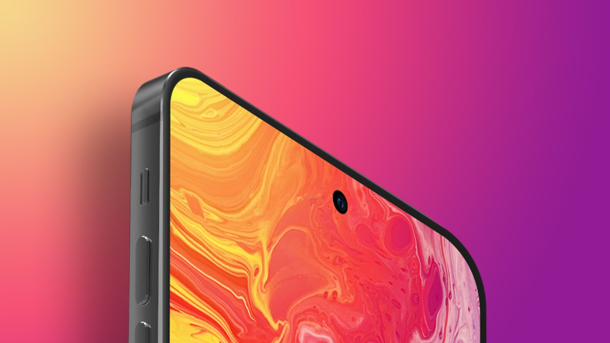
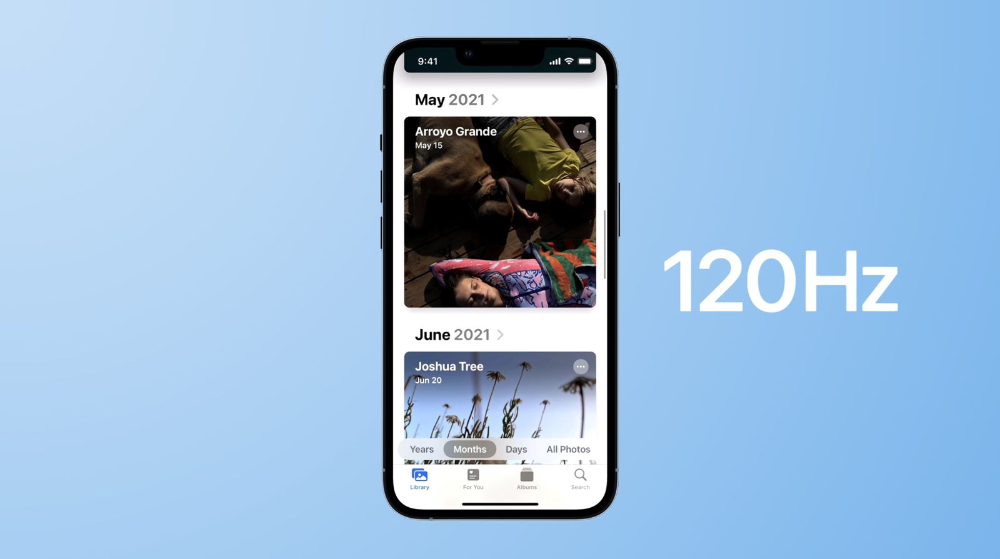

Rumored 2022 iPhone Lineup
iPhone sizes are changing in 2022, and Apple is eliminating the 5.4-inch iPhone mini as it turned out to be unpopular with customers. After seeing lackluster iPhone mini sales, Apple is planning to focus on larger iPhone sizes for its flagship devices going forward, and we're expecting to see a 6.1-inch iPhone 14, a 6.1-inch iPhone 14 Pro, a 6.7-inch iPhone 14 (Max or Plus), and a 6.7-inch iPhone 14 Pro Max. Note that there will be no 5.4-inch iPhone 14 mini this year.
Size Options
There will be no 5.4-inch iPhone in 2022 because Apple is doing away with the "mini" line following lackluster sales. The iPhone 13 mini will be the last of the mini phones, and going forward, Apple is expected to focus on larger-sized iPhones.
- 6.1-inch iPhone 14
- 6.1-inch iPhone 14 Pro
- 6.7-inch iPhone 14 Max
- 6.7-inch iPhone 14 Pro Max
- !!!Ipnone 14 mini version is not availible!!!
Naming
For most of the rumor cycle, it was assumed that Apple would name the 6.7-inch iPhone 14 that's in the works the "iPhone 14 Max" to match the "Pro Max" naming that's been used for several years now. We were counting on the iPhone 14, iPhone 14 Max, iPhone 14 Pro, and iPhone 14 Pro Max.
As it turns out, Apple might go in a different direction. Rumors now suggest that the 6.7-inch standard iPhone 14 will instead be known as the "iPhone 14 Plus," which would distinguish it from the iPhone 14 Pro Max and would likely be less confusing to those not familiar with the iPhone lineup.
If accurate, we can count on getting the 6.1-inch iPhone 14, the 6.7-inch iPhone 14 Plus, the 6.1-inch iPhone 14 Pro, and the 6.7-inch iPhone 14 Pro Max.
ProMotion Display
There were early iPhone 14 rumors suggesting that all four iPhone 14 models coming in 2022 could offer ProMotion displays with refresh rates up to 120Hz, but it looks like that's not going to happen. Apple is likely to restrict ProMotion technology to the iPhone 14 Pro models, a move that display analyst Ross Young attributes to a lack of availability of the necessary displays. Young has made it clear that he believes 120Hz refresh rates will remain an iPhone 14 Pro feature. Always-on display technology is also expected to be introduced as an iPhone 14 Pro and Pro Max exclusive.Korean website The Elec has said that at least one of the iPhone models coming next year will use a standard LTPS OLED display without 120Hz ProMotion technology , which supports Young's statements. Analyst Jeff Pu has claimed that the feature will come to all iPhone 14 models, but he is not known for his reliability.
iPhone 14 Pricing
The iPhone 14 is expected to be priced starting at $799, which is the starting price for the iPhone 13. Apple does not have plans to increase the cost of the entry-level smartphone in an effort to boost sales and increase demand.
- $ 999
- $ 1099
-
1299
- * after 10% discount for students
- $ 1750
- $ 2000
Future iPhone Rumors
Apple's first all-screen smartphone could come in 2024 with the launch of the iPhone 16 Pro. The device might be the first to feature under-display Face ID and an under-screen front camera, according to Apple analyst Ming-Chi Kuo, but display analyst Ross Young expects under-display Face ID to come first followed by an under-screen camera with the iPhone 18. 2023 iPhones are expected to feature the same will have a dual-hole cutout similar to this year's iPhone 14 Pro models, says display analyst Ross Young. The 2023 models will use the same design with circular cutout and pill-shaped cutout, and the feature won't be limited to the Pro models. The pill and hole design could shrink a bit, but it will be a couple years before Apple is ready for full under-display Face ID.